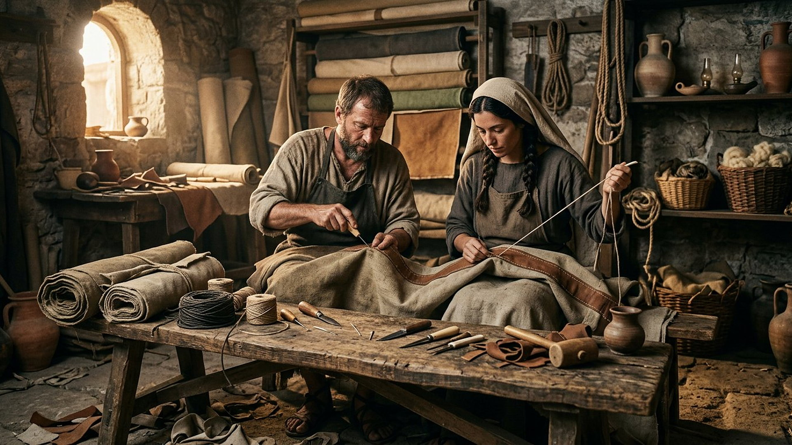
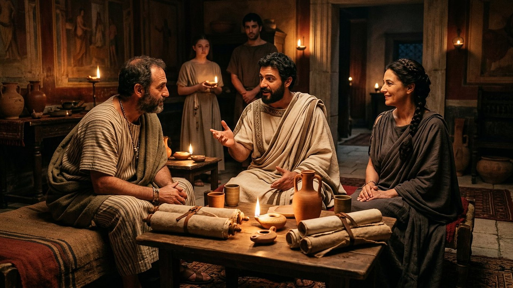
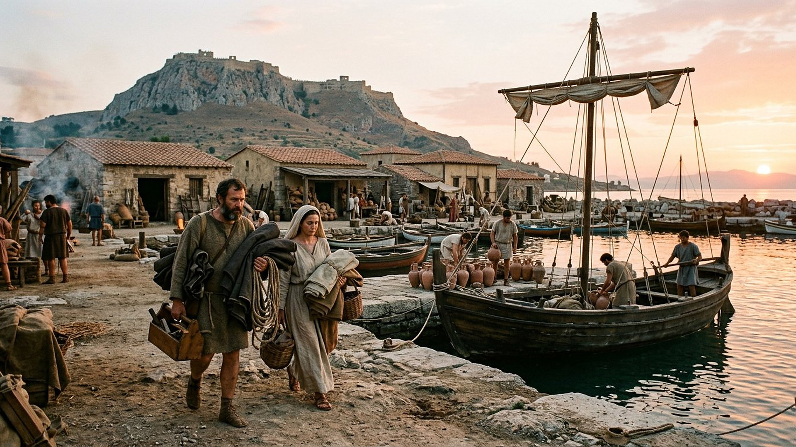

Salle 64 — Actes 18 · Romains 16 ACCOMPLIE
Priscille et Aquilas : tentes, maison et transmission
« Saluez Prisca et Aquilas, mes collaborateurs dans le Christ Jésus ; ils ont exposé leur tête pour sauver ma vie. » — Romains 16:3-4 (d’après Segond 1910)
Reconstitution numérique — l’atelier de Corinthe : Aquilas (à gauche) et Priscille cousent la toile qui fera vivre le couple, et bientôt leurs hôtes.
Un couple expulsé qui devient un pilier de trois villes
Actes 18 les présente en une phrase : « un Juif nommé Aquilas, originaire du Pont (translittération : Póntos), récemment arrivé d’Italie avec sa femme Priscille (translittération diminutive : Prískilla, Prisca), parce que Claude (translittération latine : Claudius) avait ordonné à tous les Juifs de sortir de Rome. » Déracinés par un édit impérial, ils refont leur vie à Corinthe comme fabricants de tentes — le même métier que Paul, qui loge et travaille chez eux. Dix-huit mois plus tard, ils repartent avec lui, s’installent à Éphèse, puis on les retrouve des années après à Rome, leur maison servant de lieu de réunion, « l’assemblée qui est dans leur maison ». Dans la lecture du musée, ils sont la démonstration que la transmission passe aussi par les tables d’atelier et les maisons ouvertes : sans discours public conservé, ce couple d’artisans migrants enseigne même l’orateur le plus brillant de sa génération.
La salle les suit de Rome à Corinthe, d’Éphèse à Rome encore, en exposant les débats qui les entourent — le mot exact de leur métier, l’ordre remarquable de leurs noms, l’édit de Claude — sans gonfler un dossier qui tient en quelques versets.
Le récit en cinq temps
D’un édit d’expulsion à une maison de Rome, avancez d’une station à l’autre.

Le banc des preuves : un métier, un édit et un ordre de noms
DÉBATTU
Fabricants de tentes à Corinthe : un atelier impossible à localiser (EV-73)
Vérifié : les Actes disent Paul, Priscille et Aquilas du « même métier » (en grec, translittération : homótekhnos) : skēnopoioí (translittération), fabricants de tentes — ou, selon la lecture du terme, travailleurs du cuir et de la toile épaisse, dont le cilice d’Asie mineure. Corinthe, ville d’étape et de ports sur l’isthme, fouillée depuis plus d’un siècle, offre le décor attesté de ces métiers : boutiques, entrepôts, cargaisons. Débattu : aucun atelier précis ne peut être attribué au couple, et la traduction exacte de leur spécialité reste discutée (tentes de toile, de cuir, ou articles des deux). La salle présente donc le métier et la ville, sans prétendre montrer leur échoppe.
LECTURE PROPHÉTIQUE
Priscille nommée la première : un ordre qui traverse les textes
Sur six mentions du couple, l’épouse est nommée avant son mari dans les passages les plus actifs — devant Apollos (Actes 18:26, où les meilleurs témoins placent Priscille en tête), dans les salutations de Romains 16 et de 2 Timothée 4:19. Dans la lecture du musée, cet ordre répété n’est pas un hasard de copie : il reflète le rôle public de Priscille dans l’enseignement et l’hospitalité, reconnu par Paul qui salue « Prisca et Aquilas, mes collaborateurs ». Des copistes postérieurs ont parfois inversé l’ordre en Actes 18:26, ce que les spécialistes relèvent comme un indice des gênes ultérieures — le débat est aussi manuscrit.
DÉBATTU
L’édit de Claude : expulsion datable, motif disputé
Les historiens romains confirment qu’un empereur Claude a pris des mesures contre les Juifs de Rome : Suétone (translittération latine : Suetonius) les dit expulsés pour des troubles « à l’instigation d’un certain Chrestus (translittération latine) », Dion Cassius (translittération : Díōn Kássios) parle plutôt d’interdiction de réunion. La date le plus souvent retenue, vers 49 de notre ère, donne au séjour de Paul à Corinthe un de ses rares points d’ancrage chronologique. Débattu : le lien entre ces troubles et la prédication chrétienne à Rome, et l’ampleur réelle de l’expulsion — totale ou limitée aux agitateurs. La salle expose le consensus et ses limites, sans identifier le couple à des fauteurs de troubles.
Quatre clés pour bien lire les quelques versets du couple
1. Le travail manuel comme lieu de mission
Paul ne loge pas chez eux par hasard : « parce qu’il était du même métier, il demeura chez eux et y travaillait » (Actes 18:3). Dix-huit mois de prédication corinthienne s’adossent à des journées d’atelier partagées. Les lettres prolongent cette fierté artisanale — travailler de ses mains pour n’être à charge de personne (1 Thessaloniciens 4:11-12) — face au mépris gréco-romain pour le travail manuel. La salle a donc placé l’atelier en ouverture : pour ce couple, le métier n’est pas le décor de la foi, mais son infrastructure.
2. Une pédagogie à deux voix, en privé
Apollos (translittération : Apollṓs), Alexandrin éloquent et « versé dans les Écritures », ne connaît encore que le baptême de Jean. Le couple ne le contredit pas en public à la synagogue : ils « le prirent avec eux » et lui « exposèrent plus exactement la voie de Dieu ». Le verbe grec (translittération : ektíthēmi) est celui d’un exposé soigné. La transmission la plus décisive de la salle se fait donc à table, en petit comité, par un couple dont la femme est nommée la première — et l’élève corrigé repart, recommandé, vers la Grèce (province d’Achaïe, translittération : Akhaḯa).
3. Des maisons qui tiennent lieu d’adresses
Avant tout bâtiment réservé, les assemblées se réunissent dans des maisons : « l’assemblée qui est dans leur maison » à Éphèse (1 Corinthiens 16:19), puis de nouveau à Rome (Romains 16:5). Le couple fournit ainsi aux communautés de trois métropoles leur bien le plus rare : un toit durable, une table, une adresse. Les archéologues débattent des formes de ces maisons-églises du Iᵉʳ siècle ; les textes, eux, nomment les hôtes. Le musée salue cette architecture sans murs : une pièce prêtée vaut fondation.
4. « Ils ont exposé leur tête pour ma vie »
La salutation de Romains 16:4 reste énigmatique : quand Priscille et Aquilas ont-ils risqué leur cou — en grec (translittération : tráchēlos), littéralement tendu la nuque — pour Paul ? Émeute de Corinthe devant Gallion (translittération latine : Gallio), danger d’Éphèse où Paul dit avoir « combattu contre les bêtes » (1 Corinthiens 15:32) ? Aucune scène ne le raconte. La salle signale ce blanc du dossier : l’épisode le plus héroïque du couple est aussi le moins documenté, et Paul l’atteste sans le décrire — gratitude qui vaut archive.
Prescience n’est pas fatalité — expulsés, puis indispensables
Rien n’était écrit pour ce couple d’émigrés : un édit les jette hors de Rome, et ils auraient pu ne jamais recroiser la route de l’histoire. Ce sont leurs choix répétés — rouvrir un atelier, héberger un prédicateur de passage, repartir à Éphèse, prendre un orateur à part, rouvrir leur maison à Rome — qui transforment l’exil en vocation. Deux artisans sans discours conservé deviennent, à force de tables ouvertes, les collaborateurs que « toutes les assemblées des nations » remercient.

Salle 62 : la transmission confiée à des fidèles, une génération plus tard · Salle 61 : Rome, la ville d’où ils furent expulsés et où ils reviendront · Salle 60 : une autre femme au premier plan de l’annonce
Écouter la salle
Transcription de la narration
Bienvenue dans cette nouvelle salle. Vous verrez d’abord un atelier de toiles et de cuir, un couple au travail, puis une maison éclairée par des lampes et un petit port antique au lever du soleil. Je vous souhaite une très bonne visite du musée. La visite avance en cinq étapes courtes. Prenez le temps d’observer chaque image et de lire les panneaux : ils présentent un départ forcé, un métier partagé, une conversation importante et des maisons qui deviennent des lieux de rencontre. Merci de votre attention.